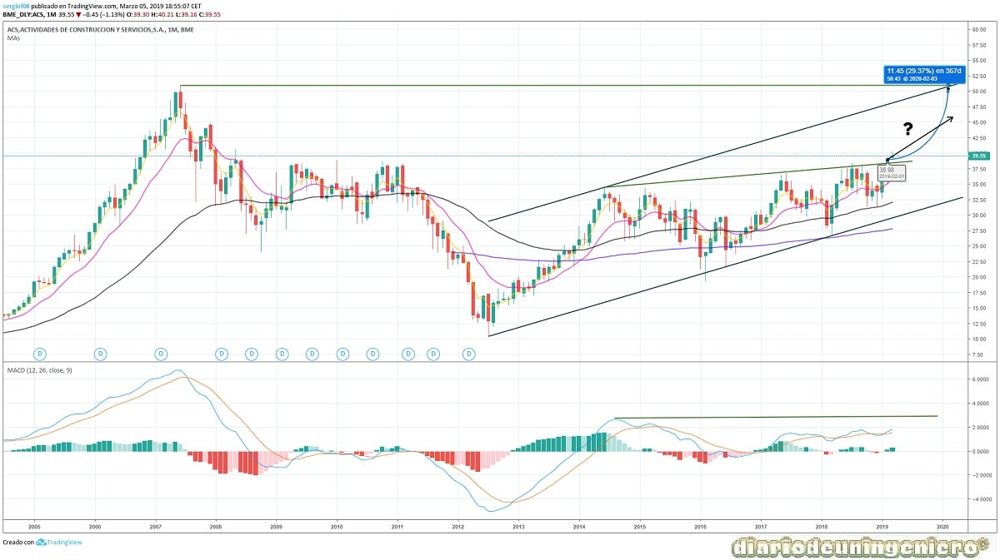
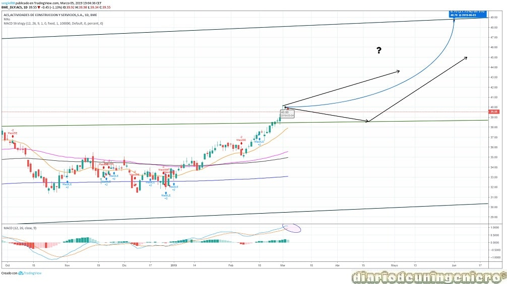

ACS, Actividades de Construcción y Servicios es una empresa constructora española que proviene de la fusión entre OCISA, fundada en 1942 y Construcciones Padrós, en 1968. Estas dos se fusionarían posteriormente con Gines Navarro Construcciones y Vías, (pertenecientes a la familia March). En 2007 adquirirían una parte de Hochtief, empresa estadounidense experta en el desarrollo de infraestructuras. Este hecho sería decisivo para el éxito que vendría después ya que haría de puente para futuras inversiones en el país norteamericano.
En 2015 reduciría considerablemente su deuda con la venta de Urbaser.
Los mayores accionistas a parte de la familia March, son los Alberto Alcocer y Alberto Cortina, Miquel Fluxa y Florentino Pérez, actual presidente de ACS. Entre los cuales suman un 30% de acciones.
A continuación presento los datos de fundamentales que me parecen más importantes:
| ### | 2015 | 2016 | 2017 | 2018 | 2019 |
|---|---|---|---|---|---|
| Deuda/ Caja empresa | Deuda Total (M) | - | 1.214 | 153 | 295 | ## |
| Beneficio/valor acción | |||||
| Capitalización(M) | 8.500 | 9.446 | 10.264 | 10.645 | 12.444 |
| EBDITA (M) | - | 2.023 | 2.279 | 2.437 | 2.531 |
| PER | - | 16,29 | 15,46 | 13,90 | 12,38 |
| Beneficio Neto (M) | - | 751 | 802 | 915 | 1.004 |
| Dividendo | - | 4,19 | 3,86 | 4,27 | 3,50 |
| Rentabilidad por acción | 1,91% | ||||
| Deuda/EBDITA | - | 0,53 | 0,06 | 0,12 | - |
En lo que respecta a la cartera de proyectos actual del grupo destaca el contrato de 3.000 millones para realizar un viaducto en Virginia, adjudicado el mes pasado y el contrato de una central hidroeléctrica en la República del congo por 12.500 millones que obtuvo el año pasado.
ACS maneja presupuestos considerables y posee capacidad para desarrollar grandes proyectos ya que esta respaldada por gente muy importante y su deuda es bastante baja. En el ranking de capitalización del IBEX35 ocuparía el segundo puesto por detrás de Ferrovial aunque seguida muy de cerca. De hecho todo apunta a que la rebasara en breve. Cuenta con casi 200.000 empleados, todo un récord para una empresa española, si bien la mayoría de ellos son extranjeros y trabajan en proyectos en sus países ya que la cartera de proyectos de ACS esta muy diversificada por el mundo, teniendo muy poquito peso en España.
En el gráfico de largo plazo se puede ver el buen comportamiento desde finales de 2012. Si comparamos el mismo gráfico con el de otros grupos de construcción españoles vemos que ACS se ha comportado muchísimo mejor tras la crisis de 2008 ya que esta a punto de recuperar el máximo que tuvo por esa fecha. Si bien también es destacable que en sus competidores directos como Ferrovial o Acciona la cotización sufrió una especulación mayor. Tanto Acciona como ACS presentan el mismo comportamiento con una segunda caída en 2012 que las llevarían a mínimos. ACS ha subido desde la fecha en la que marcaría mínimo histórico en torno a los 12€ un 300% y Acciona básicamente lo mismo de 33€ a estar cerca de 100€. Sin embargo el castigo de Ferrovial tras la crisis sería mucho más grave y no recibiría más correcciones posteriormente.
Si vemos el escenario actual en la que goza junto con Acciona de una recomendación de compra por la mayoría de analistas vemos que es muy parecida. Tenemos un pequeño banderín que se sale del canal de medio plazo con ganas de alzas y de conquistar los 100€.

Si nos fijamos en el banderín anteriormente mencionado aquí con más claridad se aprecia que podría hacer lo mismo que Acciona con dos variantes. Ir a buscar el máximo en 50 € en los próximos 3 meses o sufrir una dilatación en el tiempo avanzando más o menos plana hasta encontrarse con la línea de soporte que es la resistencia del canal que estaba siguiendo. Desde mi punto de vista y viendo el clima que hay en España con mucha incertidumbre por las elecciones puede que no veamos estos valores hasta que no se haya aclarado el panorama político español. Siendo posible Octubre de este año cuando se puedan atacar estos valores tan altos.

Usando este sitio web aceptas nuestros Terminos y condiciones. Por favor Aceptar esto antes de usar el sitio web.
© 2016 - All Rights Reserved - Diseñada por Sergio López Martínez
El sitio se mantiene gracias a la publicidad, por favor Desactiva Adblock para seguir navegando
He desactivado Adblock![[Valid RSS]](https://www.feedvalidator.org/images/valid-rss-rogers.png "Validate my RSS feed")